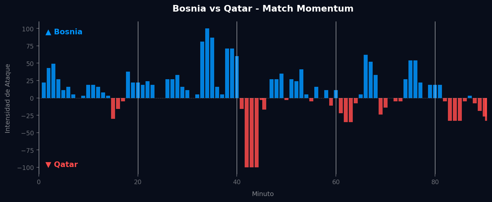
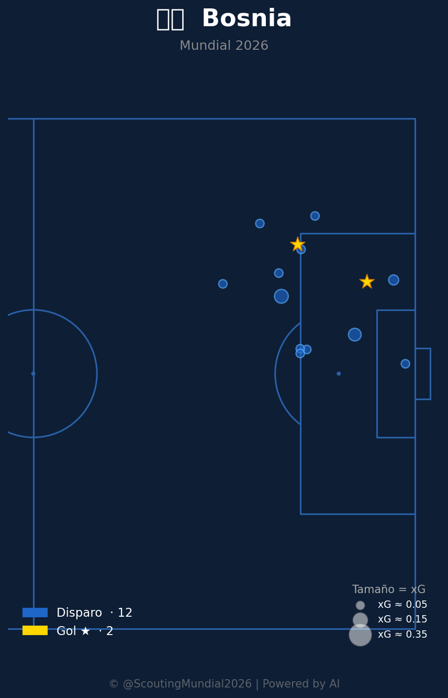
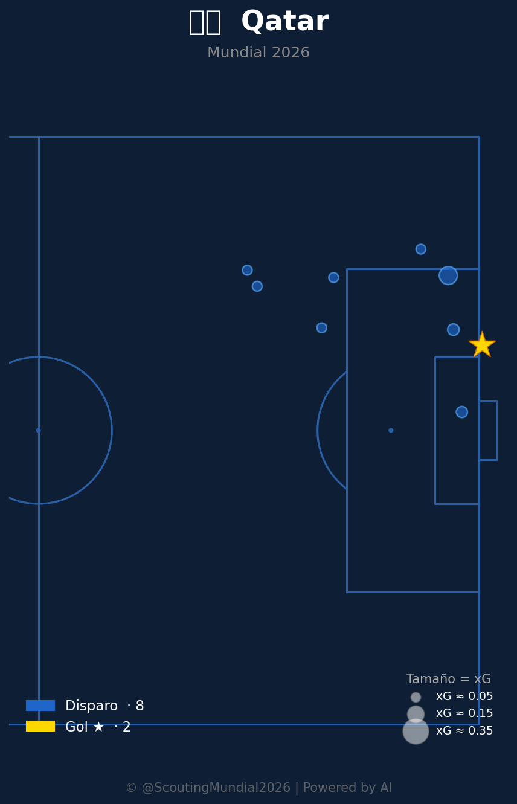

Grupo B
 Qatar
Qatar
Bosnia vs Qatar
📅 2026-06-24 · 🕒 19:00 (Local)
Bosnia

3 - 1
FINALIZADO
Qatar
📅 2026-06-24 · 🕒 19:00 (Local)
Qatar
El encuentro entre Bosnia y Qatar por el Grupo B del Mundial 2026 fue un duelo de contrastes tácticos que culminó con una merecida victoria bosnia por 3 a 1. Desde el pitido inicial, Bosnia impuso un ritmo alto, controlando el mediocampo y generando peligro constante. Su insistencia se tradujo en el primer gol alrededor de la media hora de juego, un golpe que Qatar intentó asimilar con una reacción enérgica, logrando el empate antes del descanso tras un contraataque bien ejecutado. Sin embargo, la segunda mitad vio a Bosnia reafirmar su superioridad, ajustando líneas y recuperando el control territorial. Dos goles más en la segunda parte, uno temprano para restablecer la ventaja y otro definitivo en los minutos finales, sellaron el marcador, reflejando el mejor accionar colectivo y la mayor profundidad de su plantilla. Los bosnios mostraron madurez en la gestión del partido, mientras que Qatar, pese a su esfuerzo, evidenció limitaciones para sostener un rendimiento de élite.
El patrón de Match Momentum es revelador y se alinea perfectamente con el desarrollo del partido y los goles. La intensidad máxima de Bosnia de 100.00 en el minuto 34' es un claro indicativo de la presión sostenida que ejercieron en ese tramo, que muy probablemente derivó en su primer gol, reflejando su dominio inicial. Qatar, por su parte, alcanzó su pico de 100.00 en el minuto 42', lo que sugiere un momento de reacción intensa y, presumiblemente, el instante de su único gol, buscando equilibrar el encuentro antes del entretiempo. La dominación bosnia del 59.8% en intensidad de ataque a lo largo del partido frente al 31.5% de Qatar subraya una superioridad constante en la generación de oportunidades y control del ritmo, más allá de los picos puntuales. Este diferencial explica cómo Bosnia logró capitalizar sus momentos de alta intensidad para generar goles y mantener la ventaja.

Bosnia se presentó con un esquema 4-3-3 flexible, buscando la superioridad numérica en el mediocampo y la amplitud por las bandas. Su éxito radicó en una presión alta bien coordinada que asfixió la salida de balón de Qatar en los primeros compases, forzando errores y recuperaciones rápidas en zonas peligrosas. El triángulo del mediocampo, con un pivote rocoso y dos interiores dinámicos, dictó el ritmo del partido, facilitando la transición ofensiva y ofreciendo solidez defensiva cuando Qatar intentaba progresar. Aunque sufrieron un gol en una fase de desajuste, su respuesta en el segundo tiempo, con un ajuste táctico que cerró los espacios por el centro y potenció los ataques por los costados, demostró la inteligencia del cuerpo técnico para imponer su estilo y superar los desafíos.
El planteamiento de Qatar fue más conservador, optando por un 5-4-1 que buscaba cerrar espacios y explotar contragolpes rápidos. Si bien su bloque defensivo aguantó algunos embates iniciales, la falta de una presión coordinada en mediocampo permitió a Bosnia construir con excesiva comodidad. Las transiciones defensa-ataque fueron esporádicas y dependieron en gran medida de acciones individuales, sin un patrón claro. Su gol, que llegó en un momento de máxima intensidad, fue más el producto de una reacción de orgullo y la explotación de un espacio momentáneo que de una estrategia ofensiva sostenida. Las fallas defensivas se hicieron evidentes en la segunda mitad, donde la fatiga y la desorganización de la línea de cinco defensores abrieron grietas que Bosnia supo aprovechar, exponiendo la dificultad de Qatar para mantener la concentración y el orden ante un rival de mayor calibre.
El duelo táctico entre entrenadores fue claramente decantado a favor del estratega bosnio, quien logró que su equipo implementara un plan de juego dominante y efectivo. Mientras Bosnia controló el ritmo, explotó sus virtudes y ajustó con acierto, Qatar mostró una dependencia excesiva de la resistencia defensiva y la inspiración individual, sin una propuesta ofensiva que pudiese sostenerse. La capacidad bosnia para generar dos picos de intensidad que resultaron en goles, y su clara superioridad en el Match Momentum total, cimentaron una victoria que es completamente justa. El 3-1 final no solo refleja el rendimiento en el campo, sino que también es un veredicto preciso sobre la diferencia de calidad y ejecución táctica entre ambos conjuntos en este encuentro de la Copa del Mundo.



